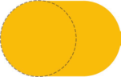
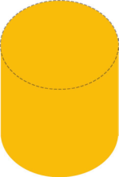
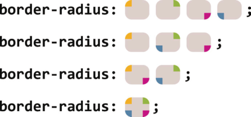

CSS揭秘笔记3
本节主要介绍一些自定义的形状知识。
自适应的椭圆
你可能注意到过，给任何正方形元素设置一个足够大的 border-radius ，就可以把它变成一个圆形。所用到的 CSS 代码如下所示：1
2
3
4background: #fb3;
width: 200px;
height: 200px;
border-radius: 100px; /* >= 正方形边长的一半 */
你可能还注意到了，如果指定任何大于 100px 的半径，仍然可以得到一个圆形。规范特别指出了这其中的原因：
“当任意两个相邻圆角的半径之和超过 border box 的尺寸时，用户代理必须按比例减小各个边框半径所使用的值，直到它们不会相互重叠为止。”
——CSS 背景与边框（第三版）（ http://w3.org/TR/css3-background/#corner-overlap ）
不过，我们往往不愿意对一个元素指定固定的宽度和高度，因为我们希望它能根据其内容自动调整并适应，而内容的长短不可能在事先就知道。即使是在设计一个静态网站的时候（元素的内容可以预先确定），我们也可能需要在某个时刻改变其内容；或者我们为它准备了一款尺寸略有差异的回退字体，而不同字体对相同内容的渲染结果很可能是不同的。在这个案例中，我们通常期望达到这个效果：如果它的宽高相等，就显示为一个圆；如果宽高不等，就显示为一个椭圆。可是，我们前面的代码并不能满足这个期望。当宽度大于高度时，我们得到的形状如下图所示。那我们到底能不能用border-radius 来产生一个椭圆，甚至是一个自适应的椭圆呢？

说到 border-radius ，有一个鲜为人知的真相：它可以单独指定水平和垂直半径，只要用一个斜杠（ / ）分隔这两个值即可。这个特性允许我们在拐角处创建椭圆圆角（参见下图）。因此，如果我们有一个尺寸为200px×150px 的元素，就可以把它圆角的两个半径值分别指定为元素宽高的一半，从而得到一个精确的椭圆：border-radius: 100px / 75px;
但是，这段代码存在一个很大的缺陷：只要元素的尺寸发生变化，border-radius 的值就得跟着改。我们在下图中可以看到，当元素的尺寸变为 200px×300px 时，如果 border-radius 没有跟着改变，会发生什么后果。因此，如果我们的元素尺寸会随着它的内容变化而变化，这就是一个问题了。

难道我们真的走投无路了吗？其实， border-radius 这个属性还有另外一个鲜为人知的真相，它不仅可以接受长度值，还可以接受百分比值。这个百分比值会基于元素的尺寸进行解析，即宽度用于水平半径的解析，而高度用于垂直半径的解析。这意味着相同的百分比可能会计算出不同的水平和垂直半径。因此，如果要创建一个自适应的椭圆，我们可以把这两个半径值都设置为 50% ：border-radius: 50% / 50%;
由于斜杠前后的两个值现在是一致的（即使它们最终可能会被计算为不同的值），我们可以把这行代码进一步简化为：border-radius: 50%;
最终，只需要这一行代码，我们就可以得到一个自适应的椭圆了。
为什么叫border-radius？
可能有人会奇怪， border-radius 到底由何得名。这个属性并不需要边框来参与工作，似乎把它叫作corner-radius 更贴切一些。这个名字乍听起来确实让人摸不着头脑，其实原因在于 border-radius 是对元素的 border box 进行切圆角处理的。当元素没有边框时，可能还看不出差异；当它有边框时，则以边框外侧的拐角作为切圆角的基准。边框内侧的圆角会稍小一些（严格来说内角半径将是 max(0,border-radius-border-width) ）。
半椭圆
现在我们已经知道如何用 CSS 来生成一个自适应的椭圆了，接下来很自然地就会问到：我们是否还能生成其他常见的形状呢，比如椭圆的一部分？让我们先来思考一下半椭圆吧（参见下图）。
它是沿纵轴对称，而不是沿横轴对称的。即使我们还不知道 border-radius 的值该是多少（或者是不是真的存在合适的值），但至少有一件事情是很清楚的：我们需要给每个角指定不同的半径。但是，我们目前为止所尝试过的所有值都只能把所有四个角指定为同一个值。
幸运的是， border-radius 的语法比我们想像中灵活得多。你可能会惊讶地发现 border-radius 原来是一个简写属性。我们可以为元素的每个角指定不同的值，而且还有两种方法可以做到这一点。第一种方法就是使用它所对应的各个展开式属性：
- border-top-left-radius
- border-top-right-radius
- border-bottom-right-radius
- border-bottom-left-radius
不过，真正简洁的方法还是使用 border-radius 这个简写属性，因为我们可以向它一次性提供用空格分开的多个值。如果我们传给它四个值，这四个值就会被分别从左上角开始以顺时针顺序应用到元素的各个拐角。如果我们提供的值少于四个，则它们会以 CSS 的常规方式重复，类似于 border-width 的值。如果只提供了三个值，则意味着第四个值与第二值相同；如果只有两个值，则意味着第三个值与第一个相同。下图对它的工作原理提供了一个图形化的解释。我们甚至可以为所有四个角提供完全不同的水平和垂直半径，方法是在斜杠前指定 1~4 个值，在斜杠后指定另外 1~4 个值。请注意这两组值是单独展开为四个值的。举例来说，当 border-radius 的值为10px / 5px 20px 时，其效果相当于 10px 10px 10px 10px / 5px 20px5px 20px 。

在掌握了这个新发现的知识之后，现在让我们来重新审视半椭圆的问题。以这样的方式来指定 border-radius 真的可以生成我们想要的形状吗？试了才知道。
让我们先来观察一些细节。
- 这个形状是垂直对称的，这意味着左上角和右上角的半径值应该是相同的；与此类似，左下角和右下角的半径值也应该是相同的。
- 顶部边缘并没有平直的部分（也就是说，整个顶边都是曲线），这意味着左上角和右上角的半径之和应该等于整个形状的宽度。
- 基于前两条观察，我们可以推断出，左半径和右半径在水平方向上的值应该均为 50% 。
- 再看看垂直方向，似乎顶部的两个圆角占据了整个元素的高度，而且底部完全没有任何圆角。因此，在垂直方向上 border-radius 的合理值似乎就是 100% 100% 0 0 。
- 因为底部两个角的垂直圆角是零，那么它们的水平圆角是多少就完全不重要了，因为此时水平圆角总是会被计算为零。（你能想像一个垂直半径为零而水平半径为正值的圆角吗？没错，连写规范的作者们都做不到。）
把所有这些结论综合起来，我们就可以很容易地写出 CSS 代码，来生成自适应的半椭圆：border-radius: 50% / 100% 100% 0 0;
接下来举一反三，用 CSS 代码来生成一个沿纵轴劈开的半椭圆（如图所示）应该就很容易了：border-radius: 100% 0 0 100% / 50%;
四分之一椭圆
在创建了一个完整的椭圆和半椭圆之后，很自然的下一个问题就是如何生成四分之一椭圆（其形状如下图所示）。
延续前面所讲的思路，我们注意到，要创建一个四分之一椭圆，其中一个角的水平和垂直半径值都需要是100%，而其他三个角都不能设为圆角。由于这四个角的半径在水平和垂直方向上都是相同的，我们甚至都不需要使用斜杠语法了。最终代码应该是这样的：border-radius: 100% 0 0 0;
你不免还会顺着往下想，是不是还能用 border-radius 来生成椭圆的其他切块（比如八分之一椭圆、三分之一椭圆）？很遗憾，你可能会失望了，因为 border-radius 属性是无法生成这些形状的。